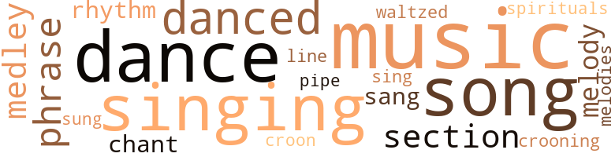
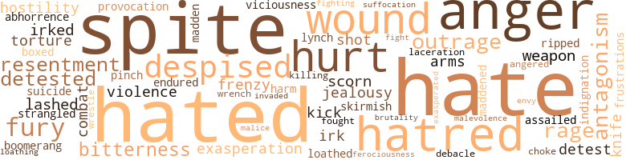
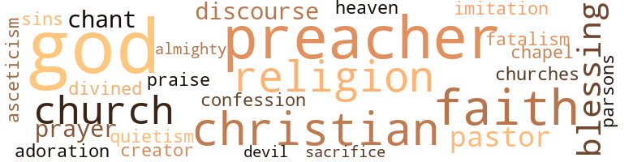

Quicksand, by Larsen, Nella (1928)
75 music-related terms matched in this text.
Most frequent terms in this topic: music (14); singing (9); dance (7); song (6); danced (6)
chant.n.01
Definition: a repetitive song in which as many syllables as necessary are assigned to a single tone
| word | sentence |
|---|---|
| chant | Behind her , before her , beside her , frenzied women gesticulated , screamed , wept , and tottered to the praying of the preacher , which had gradually become a cadenced chant . |
| chant | When at last he ended , another took up the plea in the same moaning chant , and then another . |
croon.v.01
Definition: sing softly
| word | sentence |
|---|---|
| crooning | They danced , ambling lazily to a crooning melody , or violently twisting their bodies , like whirling leaves , to ' a sudden streaming rhythm , or shaking themselves ecstatically to a thumping of unseen tomtoms . |
| croon | It was a relief to cry unre - strainedly , and she gave herself freely to soothing tears , not noticing that the groaning and sobbing of those about her had increased , unaware that the grotesque ebony figure at her side had begun gently to pat her arm to the rhythm of the singing and to croon softly : " Yes , chile , yes , chile . " |
dance.n.01
Definition: an artistic form of nonverbal communication
| word | sentence |
|---|---|
| dances | While proclaiming loudly the undiluted good of all things Negro , she yet disliked the songs , the dances , and the softly blurred speech of the race . |
| dance | Thence to costumes for a coming masquerade dance , to a new jazz song , to Yvette Dawson 's engagement to a Boston lawyer who had seen her one night at a party and proposed to her the next day at noon . |
| dance | Someone claimed her for a dance and it was some time before she caught his eyes , half questioning , upon , her . |
| dance | The dance over , she deserted her partner and deliberately made her way across the room to James Vayle . |
| dances | I 've already cut two dances for your sake . |
| dances | And shamed by his silence , his apparent forgetting , always after these dances she tried desperately to persuade herself to believe what she wanted to believe : that it had not hap - pened , that she had never had that irrepressible longipg . |
dance.v.03
Definition: skip, leap, or move up and down or sideways
| word | sentence |
|---|---|
| danced | Some day she intended to marry one of those alluring brown or yellow men who danced attendance on her . |
| danced | They danced , ambling lazily to a crooning melody , or violently twisting their bodies , like whirling leaves , to ' a sudden streaming rhythm , or shaking themselves ecstatically to a thumping of unseen tomtoms . |
| dance | She cloaked herself in a faint disgust as she watched the entertainers throw themselves about to the bursts of syncopated jangle , and when the time came again for the patrons to dance , she declined . |
| dance | " And the white men dance with the colored women . |
| dance | " Do n't the colored men dance with the white women , or do they sit about , impolitely , while the other men dance with their women ? " inquired Helga very softly , and with a slowness approaching almost to insolence . |
| dance | " Do n't the colored men dance with the white women , or do they sit about , impolitely , while the other men dance with their women ? " inquired Helga very softly , and with a slowness approaching almost to insolence . |
| danced | She danced with grace and abandon , gravely , yet with obvious pleasure , her legs , her hips , her back , all swaying gently , swung by that wild music from the heart of the jungle . |
| danced | They were reaching for their wraps when out upon the stage pranced two black men , American Negroes undoubtedly , for as they danced and cavorted , they sang in the English of America an old rag-time song that Helga remembered hearing as a child , " Everybody Gives Me Good Advice . " |
| danced | And how the singers danced , pounding their thighs , slapping their hands together , twisting their legs , waving their abnormally long arms , throwing their bodies about with a loose ease ! |
| danced | Sometimes she danced with him , always in perfect silence . |
medley.n.01
Definition: a musical composition consisting of a series of songs or other musical pieces from various sources
| word | sentence |
|---|---|
| medley | Clanging trolley bells , quarreling cats , cackling phonographs , raucous laughter , complaining motor-horns , low singing , mingled in the familiar medley that is Harlem . |
| medley | In the corridor beyond her door was a medley of noises incident to the rising and preparing for the day at the same hour of many schoolgirls - foolish giggling , indistinguishable snatches of merry conversation , distant gurgle of running water , patter of slippered feet , low-pitched singing , good-natured admonitions to hurry , slamming of doors , clatter of various unnamable articles , and - suddenly - calamitous silence . |
| medley | Always at night 's approach Helga was bewildered by a disturbing medley of feelings . |
melody.n.02
Definition: the perception of pleasant arrangements of musical notes
| word | sentence |
|---|---|
| melody | Now they were singing : . . . Jesus knows all about my troubles . . . Men and women were swaying and clapping their hands , shouting and stamping their feet to the frankly irreverent melody of the song . |
music.n.01
Definition: an artistic form of auditory communication incorporating instrumental or vocal tones in a structured and continuous manner
| word | sentence |
|---|---|
| music | Her anticipatory thoughts waltzed and eddied about to the sweet silent music of change . |
| music | She was drugged , lifted , sustained , by the extraordinary music , blown out , ripped out , beaten out , by the joyous , wild , murky orchestra . |
| music | And when suddenly the music died , she dragged herself back to the present with a conscious effort ; and a shameful certainty that not only had she been in the jungle , but that she had enjoyed it , began to taunt her . |
| music | Helga sat looking curiously about her as the buzz of conversation ceased , strangled by the savage strains of music , and the crowd became a swirling mass . |
| music | Again the music died . |
| music | At the next first sound of music Dr. Anderson rose . |
| music | She danced with grace and abandon , gravely , yet with obvious pleasure , her legs , her hips , her back , all swaying gently , swung by that wild music from the heart of the jungle . |
| music | And she did n't - " begging your pardon , Helga " - like that hideous American music they were forever playing , even if it was considered very smart . |
| music | Dinners , coffees , theaters , pictures , music , clothes . |
| music | More dinners , coffees , theaters , clothes , music . |
| music | Their house was large and comfortable , the food and music always of the best , and the type of entertainment always unexpected and brilliant . |
| music | And she indicated a tall olive-skinned girl being whirled about to the streaming music in the arms of a towering black man . |
| music | Flashingly , fragmentarily , other long-forgotten figures , women in gay fashionable frocks and men in formal black and white , glided by in bright rooms to distant , vaguely familiar music . |
| music | By and by , when I 'm really strong - " It was so easy and so pleasant to think about freedom and cities , about clothes and books , about the sweet mingled smell of Houbi-gant and cigarettes in softly lighted rooms filled with inconsequential chatter and laughter and sophisticated tuneless music . |
phrase.n.02
Definition: a short musical passage
| word | sentence |
|---|---|
| phrases | She caught only words , phrases , here and there . |
| phrase | But the phrase , though audible , was addressed to no one . |
| phrase | " Perhaps I can best explain it by the use of that trite phrase , ' You 're a lady . ' |
| phrases | Ideas , phrases , and even whole sentences and paragraphs were lifted bodily from previous orations and published works of Wendell Phillips , Frederick Douglass , Booker T. Washington , and other doctors of the race 's ills . |
pipe.n.04
Definition: a tubular wind instrument
| word | sentence |
|---|---|
| pipe | In some strange way she was able to ignore the atmosphere of self-satisfaction which poured from him like gas from a leaking pipe . |
rhythm.n.04
Definition: the arrangement of spoken words alternating stressed and unstressed elements
| word | sentence |
|---|---|
| rhythm | They danced , ambling lazily to a crooning melody , or violently twisting their bodies , like whirling leaves , to ' a sudden streaming rhythm , or shaking themselves ecstatically to a thumping of unseen tomtoms . |
| rhythm | It was a relief to cry unre - strainedly , and she gave herself freely to soothing tears , not noticing that the groaning and sobbing of those about her had increased , unaware that the grotesque ebony figure at her side had begun gently to pat her arm to the rhythm of the singing and to croon softly : " Yes , chile , yes , chile . " |
section.n.01
Definition: a self-contained part of a larger composition (written or musical)
| word | sentence |
|---|---|
| section | She would not have desired or even have been willing to live in any section outside the black belt , and she would have refused scornfully , had they been tendered , any invitation from white folk . |
| section | Anne had perceived that the decorous surface of her new husband 's mind regarded Helga Crane with that intellectual and aesthetic appreciation which attractive and intelligent women would always draw from him , but that underneath that well-managed section , in a more lawless place where she herself never hoped or desired to enter , was another , a vagrant primitive groping toward something shocking and frightening to the cold asceticism of his reason . |
| section | After half an hour he returned , saying he could " fix her up , " there was a section she could have , adding : " It 'll cost you ten dollars . " |
sing.v.02
Definition: produce tones with the voice
| word | sentence |
|---|---|
| sang | They were reaching for their wraps when out upon the stage pranced two black men , American Negroes undoubtedly , for as they danced and cavorted , they sang in the English of America an old rag-time song that Helga remembered hearing as a child , " Everybody Gives Me Good Advice . " |
| sing | I 've got somebody here who 's going to sing . |
| singing | She had opened the door and had entered before she was aware that , inside , people were singing a song which she was conscious of having heard years ago - hundreds of years it seemed . |
| sung | Was there anything particular she would like to have said , to have prayed for , to have sung ? |
| sang | Helga Crane was silent , feeling a mystifying yearning which sang and throbbed in her . |
singing.n.01
Definition: the act of singing vocal music
| word | sentence |
|---|---|
| singing | Clanging trolley bells , quarreling cats , cackling phonographs , raucous laughter , complaining motor-horns , low singing , mingled in the familiar medley that is Harlem . |
| singing | In the corridor beyond her door was a medley of noises incident to the rising and preparing for the day at the same hour of many schoolgirls - foolish giggling , indistinguishable snatches of merry conversation , distant gurgle of running water , patter of slippered feet , low-pitched singing , good-natured admonitions to hurry , slamming of doors , clatter of various unnamable articles , and - suddenly - calamitous silence . |
| singing | The singing began again , this time a low wailing thing : Oh , the bitter shame and sorrow That a time could ever be , When I let the Savior 's pity Plead in vain , and proudly answered : " All of self and none of Thee , All of self and none of Thee . " |
| singing | The wailing singing went on : . . . Less of self and more of Thee , Less of self and more of Thee . |
| singing | It was a relief to cry unre - strainedly , and she gave herself freely to soothing tears , not noticing that the groaning and sobbing of those about her had increased , unaware that the grotesque ebony figure at her side had begun gently to pat her arm to the rhythm of the singing and to croon softly : " Yes , chile , yes , chile . " |
| singing | Now they were singing : . . . Jesus knows all about my troubles . . . Men and women were swaying and clapping their hands , shouting and stamping their feet to the frankly irreverent melody of the song . |
| singing | It began , this next child-bearing , during the morning services of a breathless hot Sunday while the fervent choir soloist was singing : " Ah am freed of mah sorrow , " and lasted far into the small hours of Tuesday morning . |
| singing | Yet she had continued to try not only to teach , but to befriend those happy singing children , whose charm and distinctiveness the school was so surely ready to destroy . |
song.n.01
Definition: a short musical composition with words
| word | sentence |
|---|---|
| songs | While proclaiming loudly the undiluted good of all things Negro , she yet disliked the songs , the dances , and the softly blurred speech of the race . |
| song | Thence to costumes for a coming masquerade dance , to a new jazz song , to Yvette Dawson 's engagement to a Boston lawyer who had seen her one night at a party and proposed to her the next day at noon . |
| song | They were reaching for their wraps when out upon the stage pranced two black men , American Negroes undoubtedly , for as they danced and cavorted , they sang in the English of America an old rag-time song that Helga remembered hearing as a child , " Everybody Gives Me Good Advice . " |
| songs | More songs , old , all of them old , but new and strange to that audience . |
| song | She had opened the door and had entered before she was aware that , inside , people were singing a song which she was conscious of having heard years ago - hundreds of years it seemed . |
| song | . . . Showers of blessings . . . The appropriateness of the song , with its constant reference to showers , the ridic - ulousness of herself in such surroundings , was too much for Helga Crane 's frayed nerves . |
| song | For at the first hysterical peal the words of the song had died in the singers ' throats , and the wheezy organ had lapsed into stillness . |
| song | Now they were singing : . . . Jesus knows all about my troubles . . . Men and women were swaying and clapping their hands , shouting and stamping their feet to the frankly irreverent melody of the song . |
| songs | There would , he said , be prayers , special testimonies , and songs . |
spiritual.n.01
Definition: a kind of religious song originated by Blacks in the southern United States
| word | sentence |
|---|---|
| spirituals | Not spirituals . |
tune.n.01
Definition: a succession of notes forming a distinctive sequence
| word | sentence |
|---|---|
| melody | They danced , ambling lazily to a crooning melody , or violently twisting their bodies , like whirling leaves , to ' a sudden streaming rhythm , or shaking themselves ecstatically to a thumping of unseen tomtoms . |
| line | She recalled a line that had impressed her in her lonely school-days , " The far-off interest of tears . " |
| melodies | " Give me , " she said , " the good old-fashioned Danish melodies of Gade and Heise . |
waltz.v.01
Definition: dance a waltz
| word | sentence |
|---|---|
| waltzed | Her anticipatory thoughts waltzed and eddied about to the sweet silent music of change . |
174 violence-related terms matched in this text.
Most frequent terms in this topic: hate (13); hated (12); anger (11); spite (11); hatred (10)
abhor.v.01
Definition: find repugnant
| word | sentence |
|---|---|
| loathed | He was liked and approved of in Naxos and loathed the idea that the girl he was to marry could n't manage to win liking and approval also . |
abhorrence.n.01
Definition: hate coupled with disgust
| word | sentence |
|---|---|
| abhorrence | As she ended , she made a little clicking noise with her tongue , indicating an abhorrence too great for words . |
| loathing | Her suffocation and shrinking loathing were too great . |
aggravation.n.01
Definition: an exasperated feeling of annoyance
| word | sentence |
|---|---|
| exasperation | Why , Helga wondered , with unreasoning exasperation , did n't they find something else to talk of ? |
| exasperation | Only the figure of Dr. Anderson obtruded itself with surprising vividness to irk her because she could get no meaning from that keen sensation of covetous exasperation that had so surprisingly risen within her on the night of the cabaret party . |
aggravation.n.02
Definition: unfriendly behavior that causes anger or resentment
| word | sentence |
|---|---|
| provocation | She hated white people with a deep and burning hatred , with the kind of hatred which , finding itself held in sufficiently numerous groups , was capable some day , on some great provocation , of bursting into dangerously malignant flames . |
anger.n.01
Definition: a strong emotion; a feeling that is oriented toward some real or supposed grievance
| word | sentence |
|---|---|
| anger | She felt a sharp stinging sensation and a recurrence of that anger and defiant desire to hurt which had so seared her on that past morning in Naxos . |
| anger | This she saw clearly now , and with cold anger at all the past futile effort . |
| anger | She had a slightly sickish feeling , and a flash of anger touched her . |
| anger | Painfully , vividly , she remembered the frightened anger of Uncle Peter 's new wife , and looking back at her precipitate departure from America , she was amazed at her own stupidity . |
| anger | Leisurely she drew them back and her cold anger vanished as she decided that , now , it did n't at all matter if she failed to appear at the monotonous distasteful breakfast which was provided for her by the school as part of her wages . |
| anger | Sudden anger seized her . |
| anger | And that among themselves they talked with amusement , or with anger , of " dat uppity , meddlin ' No ' the ' n-ah , " and " pore Reve'end , " who in their opinion " would ' a done bettah to a ma'ied Clementine Richards . " |
| anger | At first she had felt only an astonished anger at the quagmire in which she had engulfed herself . |
| anger | Sitting there in her room , long hours after , Helga again felt a surge of hot anger and seething resentment . |
| anger | She could n't afford anger . |
| anger | At that command Helga Crane could not help sliding down her eyes to hide the anger that had risen in them . |
anger.v.02
Definition: become angry
| word | sentence |
|---|---|
| angered | This angered her further and she struck the wall with her hands and jumped up and began hastily to dress herself . |
attack.v.01
Definition: launch an attack or assault on; begin hostilities or start warfare with
| word | sentence |
|---|---|
| assailed | Just for a moment , outside the dining-salon , she hesitated , assailed with a tiny uneasiness which passed as quickly as it had come . |
battle.v.01
Definition: battle or contend against in or as if in a battle
| word | sentence |
|---|---|
| combat | Instinctively she wanted to combat this searching into the one thing which , here , surrounded by all other things which for so long she had so positively wanted , made her a little afraid . |
| combat | She desired ardently to combat this wearing down of her satisfaction with her life , with herself . |
boomerang.n.01
Definition: a curved piece of wood; when properly thrown will return to thrower
| word | sentence |
|---|---|
| boomerang | Later , with a sense of helplessness and inevitability , she realized that the weapon which she had chosen had been a boomerang , for she herself had felt the keen disappointment of the denial . |
box.v.03
Definition: engage in a boxing match
| word | sentence |
|---|---|
| boxed | It was as if she were shut up , boxed up , with hundreds of her race , closed up with that something in the racial character which had always been , to her , inexplicable , alien . |
brush.n.06
Definition: a minor short-term fight
| word | sentence |
|---|---|
| skirmish | She came away from the coffee feeling that she had acquitted herself well in the first skirmish . |
contemn.v.01
Definition: look down on with disdain
| word | sentence |
|---|---|
| scorn | Her New York friends looked with contempt and scorn on Naxos and all its works . |
| despised | Like the despised people of the white race , she preferred Pavlova to Florence Mills , John McCormack to Taylor Gordon , Walter Hampden to Paul Robeson . |
| despised | She pitied and despised them . |
| despised | Why , she demanded in fierce rebellion , should she be yoked to these despised black folk ? |
| despised | And they had n't despised it . |
| despised | And when , after that long frightfulness , the fourth little dab of amber humanity which Helga had contributed to a despised race was held before her for maternal approval , she failed entirely to respond properly to this sop of consolation for the suffering and horror through which she had passed . |
| scorn | Only scorn , resentment , and hate remained - and ridicule . |
| despised | - The dean was a woman from one of the " first families " - a great " race " woman ; she , Helga Crane , a despised mulatto , but something intuitive , some unanalyzed driving spirit of loyalty to the inherent racial need for gorgeousness told her that bright colours were fitting and that dark-complexioned people should wear yellow , green , and red . |
| despised | Even foolish , despised women must have food and clothing ; even unloved little Negro girls must be somehow provided for . |
craze.n.02
Definition: state of violent mental agitation
| word | sentence |
|---|---|
| frenzy | The mere sight of Audrey is enough to send her into a frenzy for a week . |
| frenzy | Arms were stretched toward her with savage frenzy . |
envy.n.01
Definition: a feeling of grudging admiration and desire to have something that is possessed by another
| word | sentence |
|---|---|
| envy | It was pleasant to Helga Crane to be able to sit calmly looking out of the window on to the smooth lawn , where a few leaves quite prematurely fallen dotted the grass , for once uncaring whether the frock which she wore roused disapproval or envy . |
ferociousness.n.01
Definition: the trait of extreme cruelty
| word | sentence |
|---|---|
| viciousness | But suddenly these things irked her with a great irksomeness and she wanted to be free of this constant prattling of the incongruities , the injustices , the stupidities , the viciousness of white people . |
| brutality | Into that yawning gap of unspeakable brutality had gone , too , her belief in the miracle and wonder of life . |
| ferociousness | A peculiar characteristic trait , cold , slowly accumulated unreason in which all values were distorted or else ceased to exist , had with surprising ferociousness shaken the bulwarks of that self-restraint which was also , curiously , a part of her nature . |
fight.v.02
Definition: fight against or resist strongly
| word | sentence |
|---|---|
| fought | She fought against him with all her might . |
| fight | I hate cruelty to students , and to teachers who ca n't fight back . |
| fighting | She said aloud , quietly , dispassionately : " Well , I 'm through with that , " and , shutting off the hard , bright blaze of the overhead lights , went back to her chair and settled down with an odd gesture of sudden soft collapse , like a person who had been for months fighting the devil and then unexpectedly had turned round and agreed to do his bidding . |
frustration.n.03
Definition: a feeling of annoyance at being hindered or criticized
| word | sentence |
|---|---|
| frustrations | So she turned her back on painful America , resolutely shutting out the griefs , the humiliations , the frustrations , which she had endured there . |
fury.n.01
Definition: a feeling of intense anger
| word | sentence |
|---|---|
| fury | At times she lashed her fury to surprising heights for one by nature so placid and gentle . |
| rage | Anne had rage in her eyes . |
| fury | Thankful for the appeasement of that loneliness which had again tormented her like a fury , she gave herself up to the miraculous joyousness of Harlem . |
| fury | In the next minute the black clouds opened wider and spilled their water with unusual fury . |
| fury | Hallelujah ! " and then , in wild , ecstatic fury jumped up and down before Helga clutching at the girl 's soaked coat , and screamed : " Come to Jesus , you pore los ' sinner ! " |
| rage | She arrived at the administration building in a mild rage , as unreasonable as it was futile , but once inside she had a sudden attack of nerves at the prospect of traversing that great outer room which was the workplace of some twenty odd people . |
| rage | And why had she permitted herself to be jolted into a rage so fierce , so illogical , so disastrous , that now after it was spent she sat despondent , sunk in shameful contrition ? |
gag.v.06
Definition: cause to retch or choke
| word | sentence |
|---|---|
| choke | I must get out or I 'll choke . " |
gall.v.02
Definition: irritate or vex
| word | sentence |
|---|---|
| irked | But suddenly these things irked her with a great irksomeness and she wanted to be free of this constant prattling of the incongruities , the injustices , the stupidities , the viciousness of white people . |
| irk | Only the figure of Dr. Anderson obtruded itself with surprising vividness to irk her because she could get no meaning from that keen sensation of covetous exasperation that had so surprisingly risen within her on the night of the cabaret party . |
| irked | Her coming departure had released her from the need for conciliation which had irked her for so long . |
| irk | I think there 's less of these evils here than in most places , but because we 're trying to do such a big thing , to aim so high , the ugly things show more , they irk some of us more . |
hate.n.01
Definition: the emotion of intense dislike; a feeling of dislike so strong that it demands action
| word | sentence |
|---|---|
| hatred | She hated white people with a deep and burning hatred , with the kind of hatred which , finding itself held in sufficiently numerous groups , was capable some day , on some great provocation , of bursting into dangerously malignant flames . |
| hatred | She hated white people with a deep and burning hatred , with the kind of hatred which , finding itself held in sufficiently numerous groups , was capable some day , on some great provocation , of bursting into dangerously malignant flames . |
| hatred | Abruptly it flashed upon her that the harrowing irritation of the past weeks was a smoldering hatred . |
| hatred | Anne 's voice was trembling with cold hatred . |
| hatred | Instead she was filled with a fierce hatred for the cavorting Negroes on the stage . |
| hatred | For the first time Helga Crane felt sympathy rather than contempt and hatred for that father , who so often and so angrily she had blamed for his desertion of her mother . |
| hate | Helga smiled a little , understanding Anne 's bitterness and hate , and a little of its cause . |
| hate | Only scorn , resentment , and hate remained - and ridicule . |
| hatred | The thought of her husband roused in her a deep and contemptuous hatred . |
| hatred | The neighbors and churchfolk came in for their share of her all-embracing hatred She hated their raucous laughter , their stupid acceptance of all things , and their unfailing trust in " de Lawd . " |
| hatred | Before her rose the pictures of her mother 's careful management to avoid those ugly scarifying quarrels which even at this far-off time caused an uncontrollable shudder , her own childish self-effacement , the savage unkindness of her stepbrothers and sisters , and the jealous , malicious hatred of her mother 's husband . |
| hatred | But gradually this zest was blotted out , giving place to a deep hatred for the trivial hypocrisies and careless cruelties which were , unintentionally perhaps , a part of the Naxos policy of uplift . |
hate.v.01
Definition: dislike intensely; feel antipathy or aversion towards
| word | sentence |
|---|---|
| hated | She hated to admit that money was the most serious difficulty . |
| hated | She hated white people with a deep and burning hatred , with the kind of hatred which , finding itself held in sufficiently numerous groups , was capable some day , on some great provocation , of bursting into dangerously malignant flames . |
| hated | They feared and hated her . |
| hated | She hated him and all the others too much . |
| hated | Go back to America , where they hated Negroes ! |
| hate | Besides , " she added irrelevantly , " I hate such nonsensical soul-searching . " |
| hate | We ca n't tell , you know ; if we were married , you might come to be ashamed of me , to hate me , to hate all dark people . |
| hate | We ca n't tell , you know ; if we were married , you might come to be ashamed of me , to hate me , to hate all dark people . |
| hate | We might come to hate each other . |
| detested | He detested tears . |
| hated | It was of a piece with that of those she so virulently hated . |
| hate | She did not even hate it now . |
| detest | In fact I detest it . " |
| hate | Helga did not hate him , the town , or the people . |
| hated | She knew only that , in the hideous agony that for interminable hours - no , centuries - she had borne , the luster of religion had vanished ; that revulsion had come upon her ; that she hated this man . |
| hate | I hate it . " |
| hated | Nevertheless , she hated him . |
| hated | The neighbors and churchfolk came in for their share of her all-embracing hatred She hated their raucous laughter , their stupid acceptance of all things , and their unfailing trust in " de Lawd . " |
| hated | And more than all the rest she hated the jangling Clementine Richards , with her provocative smirkings , because she had not succeeded in marrying the preacher and thus saving her , Helga , from that crowning idiocy . |
| hated | Suddenly she hated them all . |
| hate | I hate it ! " |
| hate | " Well , for one thing , I hate hypocrisy . |
| hate | I hate cruelty to students , and to teachers who ca n't fight back . |
| hate | I hate backbiting , and sneaking , and petty jealousy . |
| detested | She detested cool , perfectly controlled people . |
| detested | She had put it off as long as she could , for she detested her errand . |
| hated | She had put off the hated moment , had assured herself that she was tired , needed a bit of vacation , was due one . |
| detest | " Well , that 's mighty mysterious , and I detest mysteries . " |
hostility.n.01
Definition: a hostile (very unfriendly) disposition
| word | sentence |
|---|---|
| hostility | Their curiosity and slightly veiled hostility no longer touched her . |
| hostility | Ideas it rejected , and looked with open hostility on one and all who had the temerity to offer a suggestion or ever so mildly express a disapproval . |
hostility.n.02
Definition: a state of deep-seated ill-will
| word | sentence |
|---|---|
| antagonism | She laughed a little , scornfully , reflecting that the antagonism was mutual , or , perhaps , just a trifle keener on her side than on theirs . |
| antagonism | Not so much because of its apparent hopelessness as because of a feeling , intangible almost , that , excited and pleased as he was with her , her origin a little repelled him , and that , prompted by some impulse of racial antagonism , he had retreated into the fastness of a protecting habit of self-ridicule . |
| antagonism | Sensitive to atmosphere , Helga had felt at once the latent antagonism in the woman 's manner . |
indignation.n.01
Definition: a feeling of righteous anger
| word | sentence |
|---|---|
| outrage | She could n't possibly get out of a dinner-party for Anne , even though she felt that such an event on a hot night was little short of an outrage . |
| outrage | She saw , suddenly , the giving birth to little , helpless , unprotesting Negro children as a sin , an unforgivable outrage . |
| indignation | Her whole body was tense with suppressed indignation . |
| outrage | Her only impulse was to get as far away from her uncle 's house , and this woman , his wife , who so plainly wished to dissociate herself from the outrage of her very existence . |
infuriate.v.01
Definition: make furious
| word | sentence |
|---|---|
| exasperated | The futility of her effort exasperated her . |
injury.n.01
Definition: any physical damage to the body caused by violence or accident or fracture etc.
| word | sentence |
|---|---|
| harm | The longing for you does harm to my work . |
| hurt | Gradually , reluctantly , she began to know that the blow to her self-esteem , the certainty of having proved herself a silly fool , was perhaps the severest hurt which she had suffered . |
| hurt | She cared nothing , at that moment , for his hurt surprise . |
| hurt | Worst of all was the fact that under the stinging hurt she understood and sympathized with Mrs. Nilssen 's point of view , as always she had been able to understand her mother 's , her stepfather 's , and his children 's points of view . |
invade.v.01
Definition: march aggressively into another's territory by military force for the purposes of conquest and occupation
| word | sentence |
|---|---|
| invaded | But no coolness invaded the heat of the train rushing north . |
jealousy.n.01
Definition: a feeling of jealous envy (especially of a rival)
| word | sentence |
|---|---|
| jealousy | The women too were kind , feeling no need for jealousy . |
| jealousy | I hate backbiting , and sneaking , and petty jealousy . |
kick_back.v.02
Definition: spring back, as from a forceful thrust
| word | sentence |
|---|---|
| kick | I could kick myself . |
| kick | She was torn with mad fright , an emotion against which she knew but two weapons : to kick and scream , or to flee . |
kill.v.10
Definition: cause the death of, without intention
| word | sentence |
|---|---|
| killing | The greater his own sense of superiority became , the more flattered they were by his notice and small attentions , the more they cast at him killing glances , the more they hung enraptured on his words . |
knife.n.02
Definition: a weapon with a handle and blade with a sharp point
| word | sentence |
|---|---|
| knife | The wind cut her like a knife , but she did not feel it . |
| knife | It was , Helga decided , now only a big knife with cruelly sharp edges ruthlessly cutting all to a pattern , the white man 's pattern . |
laceration.n.01
Definition: a torn ragged wound
| word | sentence |
|---|---|
| laceration | She had no words which could adequately , and without laceration to her pride , convey to him the pitfalls into which very easily they might step . |
lynch.v.01
Definition: kill without legal sanction
| word | sentence |
|---|---|
| lynch | More dark bodies for mobs to lynch . |
madden.v.03
Definition: make mad
| word | sentence |
|---|---|
| madden | You creep into my brain and madden me , " and he kissed the small ivory hand . |
| maddened | Quite decorously , Helga thought , for one so maddened that he was driven , against his inclination , to offer her marriage . |
malevolence.n.01
Definition: wishing evil to others
| word | sentence |
|---|---|
| malevolence | Even the great buildings , the flying cabs , and the swirling crowds seemed manifestations of purposed malevolence . |
malice.n.01
Definition: feeling a need to see others suffer
| word | sentence |
|---|---|
| spite | Still , in spite of her reluctance and distaste , her financial situation would have to be faced , and plans made , if she were to get away from Naxos with anything like the haste which she now so ardently desired . |
| spite | § he did n't , in spite of her racial markings , belong to these dark segregated people . |
| spite | Helga , on the other hand , had never quite achieved the unmistakable Naxos mold , would never achieve it , in spite of much trying . |
| spite | For she was , in spite of all her gentle kindness , a woman who left nothing to chance . |
| spite | And , in spite of the mental strain , she had enjoyed her prominence . |
| spite | But in spite of his expressed interest and even delight in her exotic appearance , in spite of his constant attendance upon her , he gave no sign of the more personal kind of concern which - encouraged by Aunt Katrina 's mild insinuations and Uncle Poul 's subtle questionings - she had tried to secure . |
| spite | But in spite of his expressed interest and even delight in her exotic appearance , in spite of his constant attendance upon her , he gave no sign of the more personal kind of concern which - encouraged by Aunt Katrina 's mild insinuations and Uncle Poul 's subtle questionings - she had tried to secure . |
| spite | In spite of herself and her desire not to be , Helga was shocked . |
| spite | The picture - she had never quite , in spite of her deep interest in him , and her desire for his admiration and approval , forgiven Olsen for that portrait . |
| spite | They were , in spite of their extreme worldliness , very fond of her , and would , as they declared , miss her greatly . |
| spite | In spite of its glamour , existence in America , even in Harlem , was for Negroes too cramped , too uncertain , too cruel ; something not to be endured for a lifetime if one could escape ; something demanding a courage greater than was in her . |
| malice | There seemed to Helga , as they emerged from the depths of the vast station , to be a whirling malice in the sharp air of this shining city . |
pain.v.02
Definition: cause emotional anguish or make miserable
| word | sentence |
|---|---|
| hurt | When you 've lived as long as I have , you 'll know that what others do n't know ca n't hurt you . |
| hurt | Actually , though she herself had truly wanted to get out of the house when they came back , she had been a little surprised and a great deal hurt that Anne had consented so readily to her going . |
| hurt | He was still hurt . |
| hurt | What I mean is that you 'll only hurt yourself in your profession . |
| hurt | It was as if all the bogies and goblins that had beset her unloved , unloving , and un-happy childhood had come to life with tenfold power to hurt and frighten . |
pinch.n.02
Definition: an injury resulting from getting some body part squeezed
| word | sentence |
|---|---|
| pinch | Africa , Europe , perhaps with a pinch of Asia , in a fantastic motley of ugliness and beauty , semi-barbaric , sophisticated , exotic , were here . |
resentment.n.01
Definition: a feeling of deep and bitter anger and ill-will
| word | sentence |
|---|---|
| resentment | In a moment the faintness receded , leaving in its wake a sharp resentment at the trick which her strained nerves had played upon her . |
| resentment | The strident ringing of a bell somewhere in the building brought back the fierce resentment of the night . |
| bitterness | Helga smiled a little , understanding Anne 's bitterness and hate , and a little of its cause . |
| bitterness | And slowly bitterness crept into her soul . |
| bitterness | In her was born angry bitterness and an enormous disgust . |
| resentment | Sitting there in her room , long hours after , Helga again felt a surge of hot anger and seething resentment . |
rip.v.04
Definition: criticize or abuse strongly and violently
| word | sentence |
|---|---|
| ripped | She was drugged , lifted , sustained , by the extraordinary music , blown out , ripped out , beaten out , by the joyous , wild , murky orchestra . |
shoot.v.02
Definition: kill by firing a missile
| word | sentence |
|---|---|
| shot | Instantly across her still half-hypnotized consciousness little burning darts of fancy had shot themselves . |
| shot | Mrs. Hayes-Rore 's words about its terrible loneliness shot through her mind . |
strangle.v.01
Definition: kill by squeezing the throat of so as to cut off the air
| word | sentence |
|---|---|
| strangled | Helga sat looking curiously about her as the buzz of conversation ceased , strangled by the savage strains of music , and the crowd became a swirling mass . |
suffocation.n.01
Definition: killing by depriving of oxygen
| word | sentence |
|---|---|
| suffocation | Her suffocation and shrinking loathing were too great . |
suicide.n.01
Definition: the act of killing yourself
| word | sentence |
|---|---|
| suicide | To relinquish James Vayle would most certainly be social suicide , for the Vayles were people of consequence . |
thrashing.n.01
Definition: a sound defeat
| word | sentence |
|---|---|
| debacle | And death , after the debacle , would but intensify its absurdity . |
torment.v.01
Definition: torment emotionally or mentally
| word | sentence |
|---|---|
| torture | There was that day on which they told her that the last sickly infant , born of such futile torture and lingering torment , had died after a short week of slight living . |
| torture | This , added to her wounds of the spirit , made traveling something little short of a medieval torture . |
violence.n.01
Definition: an act of aggression (as one against a person who resists)
| word | sentence |
|---|---|
| violence | Desire had burned in her flesh with uncontrollable violence . |
| violence | Nevertheless she was soothed by the impetuous discharge of violence , and a sigh of relief came from her . |
weapon.n.01
Definition: any instrument or instrumentality used in fighting or hunting
| word | sentence |
|---|---|
| weapon | Later , with a sense of helplessness and inevitability , she realized that the weapon which she had chosen had been a boomerang , for she herself had felt the keen disappointment of the denial . |
| arms | She swayed , her small , slender hands gripping the chair arms for support . |
| arms | She took firm hold of the chair arms to still the trembling of her fingers . |
| weapons | She was torn with mad fright , an emotion against which she knew but two weapons : to kick and scream , or to flee . |
weather.v.01
Definition: face and withstand with courage
| word | sentence |
|---|---|
| endured | So she turned her back on painful America , resolutely shutting out the griefs , the humiliations , the frustrations , which she had endured there . |
whip.v.04
Definition: strike as if by whipping
| word | sentence |
|---|---|
| lashed | At times she lashed her fury to surprising heights for one by nature so placid and gentle . |
| lashed | But another whirl of wind lashed her and , scornful of her slight strength , tossed her into the swollen gutter . |
wound.n.01
Definition: an injury to living tissue (especially an injury involving a cut or break in the skin)
| word | sentence |
|---|---|
| wounds | It stirred memories , probed hidden wounds , whose poignant ache bred in her surprising oppression and corroded the fabric of her quietism . |
| wound | Again abruptly had come the uncontrollable wish to wound . |
| wounds | She felt consoled at last for the spiritual wounds of the past . |
| wounds | Think of the awfulness of being responsible for the giving of life to creatures doomed to endure such wounds to the flesh , such wounds to the spirit , as Negroes have to endure . " |
| wounds | Think of the awfulness of being responsible for the giving of life to creatures doomed to endure such wounds to the flesh , such wounds to the spirit , as Negroes have to endure . " |
| wound | In the girl blazed a desire to wound . |
| wounds | This , added to her wounds of the spirit , made traveling something little short of a medieval torture . |
| wound | For the wound was deeper in that her long freedom from their presence had rendered her the more vulnerable . |
wrench.n.01
Definition: a sharp strain on muscles or ligaments
| word | sentence |
|---|---|
| wrench | Helga had been silent , thinking what a severe wrench to Herr Dahl 's ideas of decency was this conversation . |
wrestle.v.01
Definition: combat to overcome an opposing tendency or force
| word | sentence |
|---|---|
| wrestle | Few , very few Negroes of the better class have children , and each generation has to wrestle again with the obstacles of the preceding ones , lack of money , education , and background . |
91 religion-related terms matched in this text.
Most frequent terms in this topic: God (19); preacher (10); Christian (7); faith (7); church (6)
asceticism.n.01
Definition: the doctrine that through renunciation of worldly pleasures it is possible to achieve a high spiritual or intellectual state
| word | sentence |
|---|---|
| asceticism | Anne had perceived that the decorous surface of her new husband 's mind regarded Helga Crane with that intellectual and aesthetic appreciation which attractive and intelligent women would always draw from him , but that underneath that well-managed section , in a more lawless place where she herself never hoped or desired to enter , was another , a vagrant primitive groping toward something shocking and frightening to the cold asceticism of his reason . |
blessing.n.05
Definition: the act of praying for divine protection
| word | sentence |
|---|---|
| blessings | Repeated over and over , she made out the words : . . . Showers of blessings , Showers of blessings . . . She was conscious too of a hundred pairs of eyes upon her as she stood there , drenched and disheveled , at the door of this improvised meeting-house . |
| blessings | Repeated over and over , she made out the words : . . . Showers of blessings , Showers of blessings . . . She was conscious too of a hundred pairs of eyes upon her as she stood there , drenched and disheveled , at the door of this improvised meeting-house . |
| blessings | . . . Showers of blessings . . . The appropriateness of the song , with its constant reference to showers , the ridic - ulousness of herself in such surroundings , was too much for Helga Crane 's frayed nerves . |
chant.n.01
Definition: a repetitive song in which as many syllables as necessary are assigned to a single tone
| word | sentence |
|---|---|
| chant | Behind her , before her , beside her , frenzied women gesticulated , screamed , wept , and tottered to the praying of the preacher , which had gradually become a cadenced chant . |
| chant | When at last he ended , another took up the plea in the same moaning chant , and then another . |
chapel.n.01
Definition: a place of worship that has its own altar
| word | sentence |
|---|---|
| chapel | And instead her luncheon time had been shortened , as had that of everyone else , and immediately after the hurried gulping down of a heavy hot meal the hundreds of students and teachers had been herded into the sun-baked chapel to listen to the banal , the patronizing , and even the in - suiting remarks of one of the renowned white preachers of the state . |
christian.n.01
Definition: a religious person who believes Jesus is the Christ and who is a member of a Christian denomination
| word | sentence |
|---|---|
| Christian | It had originally been sent to Naxos , and from there it had made the journey back to Chicago to the Young Women 's Christian Association , and then to Mrs. Hayes-Rore . |
| Christian | There was , too , Christian Lende , the young owner of the new Odin Theater . |
| Christian | It would have to be , she decided , the Young Women 's Christian Association . |
| Christian | In a near-by street she sought out an appealing little restaurant , which she had noted in her last night 's ramble through the neighborhood , for the thick cups and the queer dark silver of the Young Women 's Christian Association distressed her . |
| Christian | With this thought she remembered that the Young Women 's Christian Association maintained an employment agency . |
| Christian | She hoped that some good Christian would speak to her , invite her to return , or inquire kindly if she was a stranger in the city . |
| Christian | Ever afterwards on recalling that day on which with wellnigh empty purse and apprehensive heart she had made her way from the Young Women 's Christian Association to the Grand Boulevard home of Mrs. Hayes-Rore , always she wondered at her own lack of astuteness in not seeing in the woman someone who by a few words was to have a part in the shaping of her life . |
church.n.02
Definition: a place for public (especially Christian) worship
| word | sentence |
|---|---|
| church | Too , she would help them with their clothes , tactfully point out that sunbonnets , no matter how gay , and aprons , no matter how frilly , were not quite the proper things for Sunday church wear . |
| church | And when she sat in the dreary structure , which had once been a stable belonging to the estate of a wealthy horse-racing man and about which the odor of manure still clung , now the church and social center of the Negroes of the town , and heard him expound with verbal extravagance the gospel of blood and love , of hell and heaven , of fire and gold streets , pounding with clenched fists the frail table before him or shaking those fists in the faces of the congregation like direct personal threats , or pacing wildly back and forth and even sometimes shedding great tears as he besought them to repent , she was , she told herself , proud and gratified that he belonged to her . |
| church | One day on her round of visiting - a church duty , to be done no matter how miser - able one was - she summoned up sufficient boldness to ask several women how they felt , how they managed . |
church.n.04
Definition: the body of people who attend or belong to a particular local church
| word | sentence |
|---|---|
| churches | But she turned up her finely carved nose at their lusty churches , their picturesque parades , their naive clowning on the streets . |
| church | She was gone , unwillingly , to a meeting , a health meeting , held in a large church - as were most of Harlem 's uplift activities - as a substitute for her employer , Mr. Darling . |
| church | Nevertheless on Sundays she attended the very fashionable , very high services in the Negro Episcopal church on Michigan Avenue . |
church_service.n.01
Definition: a service conducted in a house of worship
| word | sentence |
|---|---|
| church | It was as if she had passed from the heavy solemnity of a church service to a gorgeous care-free revel . |
confession.n.05
Definition: the document that spells out the belief system of a given church (especially the Reformation churches of the 16th century)
| word | sentence |
|---|---|
| confession | It did away with the quandary in which the confession to the Dahls of such a happening would have involved her , for she could n't be sure that they , too , might not put it down to the difference of her ancestry . |
curate.n.01
Definition: a person authorized to conduct religious worship
| word | sentence |
|---|---|
| pastor | With him she willingly , even eagerly , left the sins and temptations of New York behind her to , as he put it , " labor in the vineyard of the Lord " in the tiny Alabama town where he was pastor to a scattered and primitive flock . |
| pastor | Clementine was inclined to treat Helga with an only partially concealed contemptuousness , considering her a poor thing without style , and without proper understanding of the worth and greatness of the man , Clementine 's own adored pastor , whom Helga had somehow had the astounding good luck to marry . |
| pastor | For the adoring women of his flock , noting how with increasing frequency their pastor 's house went unswept and undusted , his children unwashed , and his wife untidy , took pleasant pity on him and invited him often to tasty orderly meals , specially prepared for him , in their own clean houses . |
| parsons | This sacred thing of which parsons and other Christian folk ranted so sanctimoniously , how immoral - according to their own standards - it could be ! |
divine.v.01
Definition: perceive intuitively or through some inexplicable perceptive powers
| word | sentence |
|---|---|
| divined | But later , when she was alone , it became quite clear to her that all along they had divined its presence , had known that in her was something , some characteristic , different from any that they themselves possessed . |
eden.n.01
Definition: any place of complete bliss and delight and peace
| word | sentence |
|---|---|
| heaven | And when she sat in the dreary structure , which had once been a stable belonging to the estate of a wealthy horse-racing man and about which the odor of manure still clung , now the church and social center of the Negroes of the town , and heard him expound with verbal extravagance the gospel of blood and love , of hell and heaven , of fire and gold streets , pounding with clenched fists the frail table before him or shaking those fists in the faces of the congregation like direct personal threats , or pacing wildly back and forth and even sometimes shedding great tears as he besought them to repent , she was , she told herself , proud and gratified that he belonged to her . |
fatalism.n.02
Definition: a philosophical doctrine holding that all events are predetermined in advance for all time and human beings are powerless to change them
| word | sentence |
|---|---|
| fatalism | A species of fatalism fastened on her . |
god.n.03
Definition: a man of such superior qualities that he seems like a deity to other people
| word | sentence |
|---|---|
| gods | Anne , thank the gods ! |
| God | Nor did she notice the furtive glances that the man on her other side cast at her between his fervent shouts of " Amen ! " and " Praise God for a sinner ! " |
| God | So she stayed , listening to the fervent exhortation to God to save her and to the zealous shoutings and groanings of the congregation . |
| God | Helga shuddered a little as she recalled some of the statements made by that holy white man of God to the black folk sitting so respectfully before him . |
| God | And anyway there was God , He would perhaps make it come out all right . |
| God | So she would make sure of both things , God and man . |
| God | And , too , there was God . |
| God | To be mistress in one 's own house , to have a garden , and chickens , and a pig ; to have a husband - and to be " right with God " - what pleasure did that other world which she had left contain that could surpass these ? |
| God | When she worked there , she felt that life was utterly filled with the glory and the marvel of God . |
| God | The smallest , dirtiest , brown child , barefooted in the fields or muddy roads , was to her an emblem of the wonder of life , of love , and of God 's goodness . |
| God | She shut her eyes to the fact that his encouragement had become a little platitudinous , limited mostly to " The Lord will look out for you , " " We must accept what God sends , " or " My mother had nine children and was thankful for every one . " |
| God | Had not the good God saved her soul from hell-fire and eternal damnation ? |
| God | There were times when , having had to retreat from the kitchen in lumbering haste with her sensitive nose gripped between tightly squeezing fingers , she had been sure that the greatest kindness that God could ever show to her would be to free her forever from the sight and smell of food . |
| God | Then , kneeling , they would beseech God to stretch out His all-powerful hand on behalf of the afflicted one , softly at first , but with rising vehemence , accompanied by moans and tears , until it seemed that the God to whom they prayed must in mercy to the sufferer grant relief . |
| God | Then , kneeling , they would beseech God to stretch out His all-powerful hand on behalf of the afflicted one , softly at first , but with rising vehemence , accompanied by moans and tears , until it seemed that the God to whom they prayed must in mercy to the sufferer grant relief . |
| God | The cruel , unrelieved suffering had beaten down her protective wall of artificial faith in the infinite wisdom , in the mercy , of God . |
| God | She could n't , she thought ironically , even blame God for it , now that she knew that He did n't exist . |
| gods | " ' . . . Africa and Asia have already enriched us with a considerable number of gods . . . . ' " Miss Hartley looked up . |
| God | How the white man 's God must laugh at the great joke he had played on them ! |
| God | He hoped , he sincerely hoped , that they would n't become avaricious and grasping , thinking only of adding to their earthly goods , for that would be a sin in the sight of Almighty God . |
| God | And again it subsided in amazement at the memory of the considerable applause which had greeted the speaker just before he had asked his God 's blessing upon them . |
godhead.n.01
Definition: terms referring to the Judeo-Christian God
| word | sentence |
|---|---|
| creator | Now Helga went in and stood for a long time before it , with its creator 's parting words in mind : " . . . a tragedy . . . my picture is , after all , the true Helga Crane . " |
| Almighty | He hoped , he sincerely hoped , that they would n't become avaricious and grasping , thinking only of adding to their earthly goods , for that would be a sin in the sight of Almighty God . |
grace.n.06
Definition: a short prayer of thanks before a meal
| word | sentence |
|---|---|
| blessing | And again it subsided in amazement at the memory of the considerable applause which had greeted the speaker just before he had asked his God 's blessing upon them . |
imitation.n.01
Definition: the doctrine that representations of nature or human behavior should be accurate imitations
| word | sentence |
|---|---|
| imitation | Else why their constant slavish imitation of traits not their own ? |
praise.n.02
Definition: offering words of homage as an act of worship
| word | sentence |
|---|---|
| praise | Herr and Fru Dahl had not exactly liked it either , although collectors , artists , and critics had been unanimous in their praise and it had been hung on the line at an annual exhibition , where it had attracted much flattering attention and many tempting offers . |
prayer.n.01
Definition: the act of communicating with a deity (especially as a petition or in adoration or contrition or thanksgiving)
| word | sentence |
|---|---|
| prayer | Anxiously the preacher sat , Bible in hand , beside his wife 's bed , or in a nervous half-guilty manner invited the congregated parishioners to join him in prayer for the healing of their sister . |
| prayers | There would , he said , be prayers , special testimonies , and songs . |
preacher.n.01
Definition: someone whose occupation is preaching the gospel
| word | sentence |
|---|---|
| preachers | And instead her luncheon time had been shortened , as had that of everyone else , and immediately after the hurried gulping down of a heavy hot meal the hundreds of students and teachers had been herded into the sun-baked chapel to listen to the banal , the patronizing , and even the in - suiting remarks of one of the renowned white preachers of the state . |
| preacher | Helga Crane was amused , angry , dis - dainful , as she sat there , listening to the preacher praying for her soul . |
| preacher | Behind her , before her , beside her , frenzied women gesticulated , screamed , wept , and tottered to the praying of the preacher , which had gradually become a cadenced chant . |
| preacher | And where , as the wife of the preacher , she was a person of relative importance . |
| preacher | And she had her religion , which in her new status as a preacher 's wife had of necessity become real to her . |
| preachers | In the days before her conversion , with its subsequent blurring of her sense of humor , Helga might have amused herself by tracing the relation of this constant ogling and flattering on the proverbially large families of preachers ; the often disastrous effect on their wives of this constant stirring of the senses by extraneous women . |
| preacher | For the preacher , her husband , she had a feeling of gratitude , amounting almost to sin . |
| preacher | Perhaps it was the fact that the preacher was , now , not so much at home that even lent to it a measure of real comfort . |
| preacher | The womenfolk spoke more kindly and more affectionately of the preacher 's Northern wife . |
| preacher | Anxiously the preacher sat , Bible in hand , beside his wife 's bed , or in a nervous half-guilty manner invited the congregated parishioners to join him in prayer for the healing of their sister . |
| preacher | And more than all the rest she hated the jangling Clementine Richards , with her provocative smirkings , because she had not succeeded in marrying the preacher and thus saving her , Helga , from that crowning idiocy . |
| preacher | They knew enough to stay in their places , and that , said the preacher , showed good taste . |
quietism.n.01
Definition: a form of religious mysticism requiring withdrawal from all human effort and passive contemplation of God
| word | sentence |
|---|---|
| quietism | It stirred memories , probed hidden wounds , whose poignant ache bred in her surprising oppression and corroded the fabric of her quietism . |
religion.n.01
Definition: a strong belief in a supernatural power or powers that control human destiny
| word | sentence |
|---|---|
| faith | But she had a deep faith in the perfection of her own taste , and no mind to be bedecked in flaunting flashy things . |
| faith | It went on and on without pause with the persistence of some unconquerable faith exalted beyond time and reality . |
| religion | She could n't be sure that it was n't religion that had made her feel so utterly different from dreadful yesterday . |
| religion | And she had her religion , which in her new status as a preacher 's wife had of necessity become real to her . |
| faith | Before her Helga felt humbled and oppressed by the sense of her own unworthiness and lack of sufficient faith . |
| faith | The possibility of alleviating her burdens by a greater faith became lodged in her mind . |
| Faith | Faith was really quite easy . |
| faith | This utter yielding in faith to what had been sent her found her favor , too , in the eyes of her neighbors . |
| religion | She knew only that , in the hideous agony that for interminable hours - no , centuries - she had borne , the luster of religion had vanished ; that revulsion had come upon her ; that she hated this man . |
| faith | The cruel , unrelieved suffering had beaten down her protective wall of artificial faith in the infinite wisdom , in the mercy , of God . |
| religion | With the obscuring curtain of religion rent , she was able to look about her and see with shocked eyes this thing that she had done to herself . |
| religion | Her mind , swaying back to the protection that religion had afforded her , almost she wished that it had not failed her . |
| religion | None did , and she became bitter , distrusting religion more than ever . |
| faith | Mrs. Hayes-Rore had appeared to put such faith in their recommendation of her that she felt almost obliged to give satisfaction . |
religion.n.02
Definition: an institution to express belief in a divine power
| word | sentence |
|---|---|
| Religion | Religion had , after all , its uses . |
sacrifice.v.04
Definition: make a sacrifice of; in religious rituals
| word | sentence |
|---|---|
| sacrifice | It was not sacrifice she felt now , but actual desire to stay , and to come back next year . |
satan.n.01
Definition: (Judeo-Christian and Islamic religions) chief spirit of evil and adversary of God; tempter of mankind; master of Hell
| word | sentence |
|---|---|
| devil | She said aloud , quietly , dispassionately : " Well , I 'm through with that , " and , shutting off the hard , bright blaze of the overhead lights , went back to her chair and settled down with an odd gesture of sudden soft collapse , like a person who had been for months fighting the devil and then unexpectedly had turned round and agreed to do his bidding . |
sermon.n.01
Definition: an address of a religious nature (usually delivered during a church service)
| word | sentence |
|---|---|
| discourse | Making her tardy arrival during a tedious discourse by a pompous saffron-hued physician , she was led by the irritated usher , whom she had roused from a nap in which he had been pleasantly freed from the intricacies of Negro health statistics , to a very front seat . |
| discourse | The offended doctor looked at the ceiling , at the floor , and accusingly at Helga , and finally continued his lengthy discourse . |
sin.n.06
Definition: violent and excited activity
| word | sentence |
|---|---|
| sins | With him she willingly , even eagerly , left the sins and temptations of New York behind her to , as he put it , " labor in the vineyard of the Lord " in the tiny Alabama town where he was pastor to a scattered and primitive flock . |
worship.n.02
Definition: a feeling of profound love and admiration
| word | sentence |
|---|---|
| adoration | Besides , open adoration was the prerogative , the almost religious duty , of the female portion of the flock . |